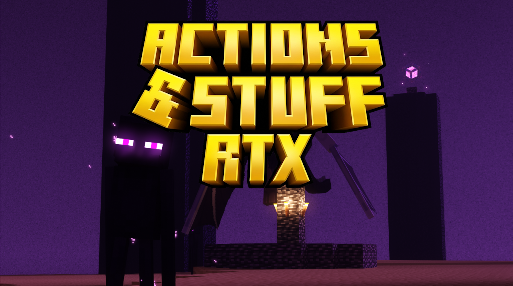

Select Patch Mode
🧹 Scan & Clean Old Patches
Locates and deletes leftover Actions & Stuff pack directories from Minecraft resource pack and world folders to keep your installation clean.
⚙️ Edit options.txt directly
Directly modify Minecraft graphics configuration files to force Ray Tracing, Upscaling, and other premium visual toggles.
🛠️ Standalone Utilities
Select a utility tool to execute specialized tasks without running the main patcher pipeline.
Deterministic ZIP Packer
Creates a zip archive with fixed timestamps (Jan 1, 1980) and no compression (stored). Ideal for patch generators.
💬 Support & Community
Need help or want to join the community? Check out the servers below.

Chaos dev Projects Server Recommended
The official server for Actions & Stuff RTX Patcher development and updates. The 3D printing and gaming community is also on there!

BetterRTX Discord Server
The central hub for all things Minecraft RTX and BetterRTX development.
📦 Release Builder
Edit version metadata and build a distributable release of the patcher.
Version Editor
Build Actions
npm run tauri build and opens the output folder
src-tauri/target/release/bundle in Explorer
src-tauri/assets/Patches in Explorer